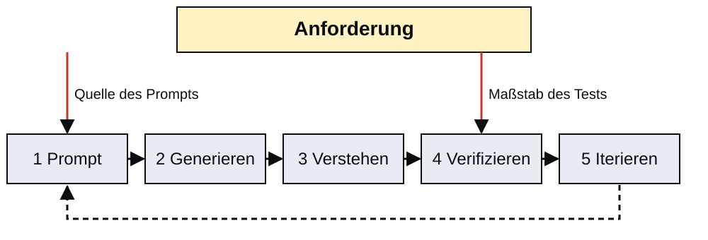
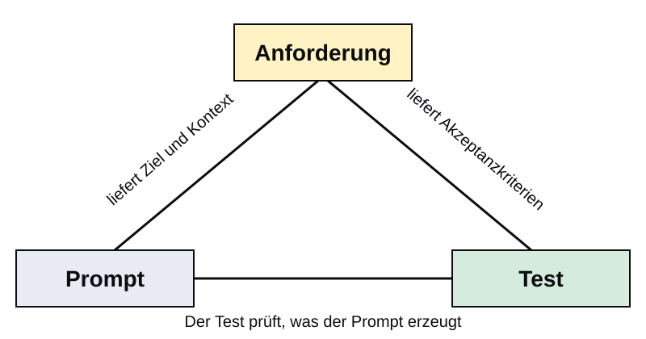

Anforderungen
Vom Problem zum Prompt
If I had asked people what they wanted, they would have said faster horses.
— Henry Ford
Warum Anforderungen?
TL;DR
KI-Werkzeuge erzeugen Code aus Prompts, aber ein guter Prompt setzt voraus, dass das Problem präzise verstanden ist. Anforderungsanalyse ist die Vorbedingung für jede KI-gestützte Entwicklung: Sie liefert die Quelle des Prompts und die Grundlage des Tests.
Was KI tut
Sie erzeugt Code, der den Prompt erfüllt.
Was KI nicht tut
Sie prüft nicht, ob der Prompt das Problem des Stakeholders trifft.
Konsequenz
Sie sind die Brücke zwischen Stakeholder-Bedarf und KI-generiertem Code.
Keine gute Anforderung, kein guter Prompt.
KI-Werkzeuge wie Claude Code generieren Code, der den gegebenen Prompt möglichst gut erfüllt. Sie können jedoch nicht selbständig entscheiden, ob der Prompt das richtige Problem beschreibt. Diese Lücke schließt der Entwickler durch systematische Anforderungsanalyse, die dem Prompting vorausgeht.
Anforderung: Quelle von Prompt und Test
Der agentische Zyklus:
- Prompt → KI generiert Code
- Generate → Code entsteht
- Understand → Code lesen
- Verify → Testen gegen Anforderung
- Iterate → Prompt verfeinern
Anforderung ist Grundlage für Schritt 1 und Schritt 4.
Ohne klare Anforderung:
- kein präziser Prompt
- kein sinnvoller Test
- kein Maßstab für „fertig”

Die Anforderung hat im agentischen Entwicklungszyklus eine doppelte Rolle: Sie ist die Quelle des Prompts (Schritt 1) und die Grundlage der Verifikation (Schritt 4). Ohne sie lässt sich weder sinnvoll prompten noch prüfen, ob das Ergebnis genügt.
Verifikation besteht dabei nicht nur aus Tests. Je nach Anforderung kommen auch Inspektion, Analyse oder Demonstration zum Einsatz, etwa wenn Wartbarkeit über Code-Review oder Benutzbarkeit über Beobachtung geprüft wird.
→ Verweis: 03d_AgentischesProgrammieren (S01) für die Prompt-Struktur.
Anforderungsarten
Drei Kategorien
TL;DR
Anforderungen lassen sich in drei Kategorien unterteilen: funktionale Anforderungen (was das System tun muss), nichtfunktionale Anforderungen (wie gut es das tun muss) und Randbedingungen (was den Lösungsraum einschränkt). Alle drei sind relevant für Prompt und Test.
Für das Prompting heißt das: Funktionale Anforderungen werden zu konkreten Aufgaben, nichtfunktionale Anforderungen zu Qualitätszielen und Randbedingungen zu festen Leitplanken. Für die Verifikation heißt es: Manche Anforderungen werden getestet, andere durch Analyse, Inspektion oder Demonstration überprüft.
Funktionale Anforderungen beschreiben das gewünschte Verhalten: Ein- und Ausgaben, Abläufe, Reaktionen auf Ereignisse. Nichtfunktionale Anforderungen beschreiben Qualitätseigenschaften wie Geschwindigkeit, Zuverlässigkeit oder Wartbarkeit. Randbedingungen schränken den Lösungsraum von außen ein, durch Hardware, Plattform, Gesetze oder Standards.
Anforderung
Eine Anforderung ist eine messbare Aussage darüber, was ein System tun oder sein soll, nicht wie es das erreicht.
Beispiel: Sensorüberwachung Brückenbauwerk
Szenario
Überwachungssystem für Feuchte- und Temperatursensoren in einem Brückenbauwerk.
Funktional
- Messwerte alle 60 s einlesen
- Grenzwertüberschreitung erkennen
- Alarm per E-Mail versenden
- Messdaten lokal speichern
Nichtfunktional
- Antwortzeit unter 2 s
- Weiterbetrieb bei Netzausfall
Randbedingungen
- Hardware: Raspberry Pi 4
- Betriebssystem: Raspberry Pi OS
Dieses Beispiel begleitet die gesamte Vorlesung. Das Sensorüberwachungssystem für ein Brückenbauwerk ist typisch für Bauingenieurwesen und Umweltüberwachung: eingebettete Hardware, geringe Netzanbindung, harte Zeitanforderungen.
Häufige Fehler bei Anforderungen
Schlecht
- Vage: „Das System soll schnell sein“
- Nicht testbar: „Benutzerfreundliche Oberfläche“
- Lösungsorientiert: „Nutze SQLite als Datenbank“
Besser
- Messbar: „Antwortzeit unter 2 s bei 95 % der Anfragen“
- Testbar: „Die Alarmfunktion wird ohne Anleitung in unter 30 s gefunden“
- Problemorientiert: „Messdaten bleiben nach Stromausfall abrufbar“
Eine gute Anforderung ist messbar, überprüfbar und beschreibt das Was, nicht das Wie. Vage oder lösungsorientierte Anforderungen führen zu schlechten Prompts und untestbaren Ergebnissen. Viele dieser Fehler entstehen, weil nur aus einer Perspektive formuliert wird. Deshalb folgt als nächster Schritt die Stakeholder-Sicht.
Stakeholder-Perspektiven
Drei Perspektiven, ein System
TL;DR
Dasselbe System wird von verschiedenen Stakeholdern mit unterschiedlichen Erwartungen betrachtet. Das Verstehen aller Perspektiven ist Voraussetzung dafür, vollständige und konsistente Anforderungen zu formulieren.
Stakeholder-Analyse deckt auf, dass verschiedene Gruppen aus denselben Rohdaten völlig unterschiedliche Anforderungen ableiten. Wer diese Unterschiede nicht kennt, baut Systeme, die nur einer Gruppe dienen.
| Stakeholder | Kernbedarf | Schlüssel-Anforderung |
|---|---|---|
| Tragwerksplaner | Langzeitdaten | IFC-Export |
| Facility Manager | Echtzeit | Dashboard-Ladezeit unter 2 s |
| Behördenprüfer | Nachvollziehbarkeit | Audit-Log, Manipulationsschutz |
Stakeholder-Bedarf in Anforderungen überführen
Vorgehen
- Stakeholder identifizieren
- Nutzungsszenarien je Rolle erfassen
- Funktionale und nichtfunktionale Anforderungen ableiten
- Konflikte aufdecken und priorisieren
Typische Konflikte
- Echtzeit (Manager) gegen Langzeitarchiv (Planer)
- Offene API gegen Sicherheitsanforderung (Prüfer)
- Detailtiefe gegen Übersichtlichkeit
Konflikte zwischen Stakeholderanforderungen sind normal und müssen explizit verhandelt werden, nicht implizit aufgelöst. Ohne Stakeholder-Analyse entstehen Systeme, die einem Stakeholder gerecht werden und allen anderen nicht.
Sobald mehrere Perspektiven sichtbar sind, reicht ein allgemeiner Wunsch wie „zuverlässig“ oder „skalierbar“ nicht mehr aus. Für Entscheidungen zwischen Konflikten braucht es präzise Qualitätskriterien.
Qualitätskriterien
Messbare Abnahmekriterien
TL;DR
Qualitätskriterien überführen nichtfunktionale Anforderungen möglichst in messbare Abnahmekriterien. Wo Quantifizierung nicht sinnvoll oder nicht vollständig möglich ist, müssen stattdessen qualitative Prüfkriterien für Analyse, Inspektion oder Demonstration formuliert werden.
„Das System soll zuverlässig sein.“
Messbar gemacht:
- Messwerte bleiben nach Stromausfall abrufbar
- Automatischer Neustart nach unter 60 s
„Das System soll skalierbar sein.“
Messbar gemacht:
- 1 Mio. Datensätze in unter 10 s verarbeiten
- Ausgabe validiert gegen das IFC-Schema
Sofern möglich braucht jede nichtfunktionale Anforderung ein quantitatives Akzeptanzkriterium. Falls das nicht sinnvoll ist, braucht sie wenigstens ein klares Prüfkriterium.
Messbare Abnahmekriterien sind der Übergang von der Anforderungsanalyse zur Testspezifikation. Ohne sie gibt es keinen objektiven Maßstab dafür, ob ein System die Anforderung erfüllt. Für Eigenschaften wie Wartbarkeit, Benutzbarkeit oder Ästhetik reichen Zahlen allein oft nicht aus; dort müssen ergänzende Review- oder Beobachtungskriterien definiert werden.
| Domäne | Vage | Überprüfbar |
|---|---|---|
| CAD/BIM | „Export muss kompatibel sein“ | Ausgabe validiert gegen IFC 4.0 ohne Schemafehler |
| Öffentliche Verwaltung | „Antragstellung soll barrierearm sein“ | Zentrale Schritte sind per Tastatur bedienbar und im Test beobachtbar |
| Sensorüberwachung | „Alarm soll zuverlässig sein“ | Jeder Alarm wird protokolliert und ist nach Neustart abrufbar |
Dieses Muster zieht sich durch alle Domänen: vage Wünsche müssen in überprüfbare Kriterien übersetzt werden. Erst dann können sie als Prompt-Bedingung und als Testfall oder Review-Kriterium verwendet werden.
User Stories
User-Story-Format
TL;DR
User Stories strukturieren Anforderungen aus der Nutzerperspektive. Die Schablone (als … möchte ich … damit …) trennt Rolle, Funktion und Nutzen, also genau die Struktur, die ein KI-Werkzeug braucht, um relevanten Code zu erzeugen.
Schablone
Als [Rolle]
möchte ich [Funktion]
damit ich [Nutzen].
Akzeptanzkriterien beantworten: Wann ist die Story erledigt?
Beispiel
Als Facility Manager
möchte ich ein Sensor-Alarm-Dashboard
damit ich vor einem SLA-Bruch reagieren kann.
- Dashboard lädt in unter 2 s
- Aktive Alarme werden rot hervorgehoben
- Quittierung wird mit UTC-Zeitstempel gespeichert
Die User-Story-Schablone stammt aus dem agilen Softwaremanagement. Sie ist besonders wertvoll für das Prompting, weil sie Rolle, Funktion und Nutzen explizit trennt. Diese drei Elemente bilden den Kern eines guten Prompts.
Anforderung und Prompt
Von der User Story zum Prompt: Kontext
TL;DR
Eine gut formulierte User Story lässt sich schrittweise in einen strukturierten Claude-Code-Prompt überführen. Jedes Akzeptanzkriterium wird direkt zu einer Prompt-Bedingung.
User Story
Als Facility Manager
möchte ich ein Sensor-Alarm-Dashboard
damit ich vor einem SLA-Bruch reagieren kann.
- Lädt in unter 2 s
- Aktive Alarme rot markiert
- Quittierung mit UTC-Zeitstempel
Prompt: Kontext-Abschnitt
Du bist ein Python-Entwickler.
Aufgabe: Sensor-Alarm-Dashboard.
Rolle: Facility Manager
Ziel: SLA-Überwachung in EchtzeitRolle und Nutzen der User Story bilden den Kontext des Prompts.
Der erste Schritt überführt Rolle und Nutzen der User Story in den Kontext-Abschnitt des Prompts. Der Kontextrahmen teilt dem KI-Werkzeug mit, aus welcher Perspektive und mit welchem Ziel es arbeitet.
Verweis: Prompt-Struktur aus 03d_AgentischesProgrammieren (S01).
Von der User Story zum Prompt: Anforderungen
Akzeptanzkriterium zu Prompt-Bedingung
- Lädt in unter 2 s wird zu
Ladezeit < 2 s - Alarme rot wird zu
Alarme mit Status "active" rot - Zeitstempel wird zu
Quittierung + UTC-Zeitstempel
Vollständiger Prompt
Erstelle ein Streamlit-Dashboard
für Sensor-Alarme (Python).
Anforderungen:
- Ladezeit < 2 s
- Aktive Alarme rot hervorheben
- Quittierung + UTC-Zeitstempel
Schreibe pytest-Tests, die diese
Anforderungen prüfen.Eine präzise Anforderung ist der beste Prompt.
Jedes Akzeptanzkriterium wird direkt in eine Prompt-Bedingung übersetzt. Der resultierende Prompt ist präziser und enthält bereits die Grundlage für die Testspezifikation. Das KI-Werkzeug bekommt ein klares Zielkriterium.
Von Anforderungen zu Tests
Von der Anforderung zum Test
TL;DR
Dieselbe User Story, die den Prompt erzeugt, liefert auch die Testfälle. Akzeptanzkriterien werden direkt in Unit-Tests übersetzt. Dieser Abschnitt motiviert die vertiefte Behandlung in 08a_UnitTest (S08).
„Dashboard lädt in unter 2 s“
def test_dashboard_load_time():
start = time.time()
dashboard = load_dashboard(
sensor_data
)
elapsed = time.time() - start
assert elapsed < 2.0, \
f"Zu langsam: {elapsed:.2f}s"„Quittierung mit UTC-Zeitstempel“
def test_alarm_acknowledgment():
alarm = Alarm(
sensor_id="S01",
level="critical"
)
alarm.acknowledge(user="jdoe")
assert alarm.ack_timestamp \
is not None
assert alarm.ack_user == "jdoe"- Prüfe, ob der Test das Akzeptanzkriterium tested und nicht nur die Implementierung.
- Führe den Test gegen die Anforderung aus, nicht nur gegen den Code.
- Schreibe den Test vor dem Prompt, dann siehst du sofort, was fehlt.
- Nutze bei nicht direkt testbaren Anforderungen ergänzend Inspektion, Analyse oder Demonstration.
Der Unit-Test ist die formale Repräsentation vieler Akzeptanzkriterien. Wenn der Test grün ist, ist die zugehörige testbare Anforderung erfüllt. Diese direkte Traceability (Rückverfolgbarkeit) von Anforderung über Akzeptanzkriterium bis Test ist der Kern des testgetriebenen Promptings. Nicht alle Anforderungen lassen sich jedoch vollständig in Unit-Tests ausdrücken; manche werden ergänzend durch Review, Analyse oder Beobachtung verifiziert.
Verweis: 08a_UnitTest (S08) vertieft Unit-Testing mit pytest in Python.
Test-Driven Prompting
Reihenfolge
- Anforderung formulieren
- Akzeptanzkriterien ableiten
- Test schreiben (noch kein Code)
- Prompt aus Anforderung und Test
- KI generiert Code
- Test grün, Anforderung erfüllt
Vorteil
- Der Prompt enthält den Test als Spezifikation
- Die KI hat ein klares Zielkriterium
- Verifikation ist objektiv und automatisierbar
- Anforderung, Prompt und Test bleiben synchron
Test-Driven Prompting überträgt das Prinzip von Test-Driven Development (TDD) auf den KI-gestützten Entwicklungsprozess: Zuerst den Test schreiben, dann den Prompt formulieren, dann Code generieren lassen. Das Ergebnis ist objektiv verifizierbarer Code, bei dem der Test die Anforderung abbildet.
Das Traceability-Dreieck
Traceability-Dreieck
TL;DR
Anforderung, Prompt und Test sind keine unabhängigen Artefakte, sie bilden ein Traceability-Dreieck. Änderungen an einem Element müssen die anderen beiden mitberücksichtigen.

Regel
Ändert sich die Anforderung, müssen Prompt und Test angepasst werden.
Ändert sich der Test, müssen Anforderung und Prompt geprüft werden.
Kein Test und kein Prompt ohne Anforderung.
Das Dreieck ist vollständig, wenn jede Anforderung einen Prompt und einen Test hat und jede Änderung alle drei aktualisiert.
Das Traceability-Dreieck ist das zentrale Konzept dieser Vorlesung: Anforderung, Prompt und Test sind drei Seiten desselben Dreiecks.
| Artefakt | Quelle | Werkzeug |
|---|---|---|
| Anforderung | Stakeholder | User Story |
| Prompt | Anforderung | Claude Code |
| Test | Akzeptanzkriterium | pytest |
In der Praxis ist dieses Dreieck jedoch nie automatisch stabil. Prompts, Tests und Anforderungen driften im Projektalltag auseinander; deshalb braucht Traceability regelmäßige Reviews und kurze Audits, um Lücken sichtbar zu machen.
Querverweise:
03d_AgentischesProgrammieren(S01): Prompt-Struktur, die hier angewendet wird03c_Softwareentwurf(S03): Anforderungen gehen dem Entwurf voraus04b_Programmablauf(S04): Flussdiagramme operationalisieren Anforderungen08a_UnitTest(S08): Unit-Tests als formale Verifikationsschicht